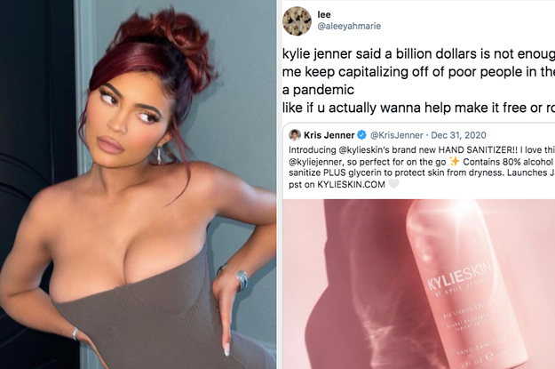
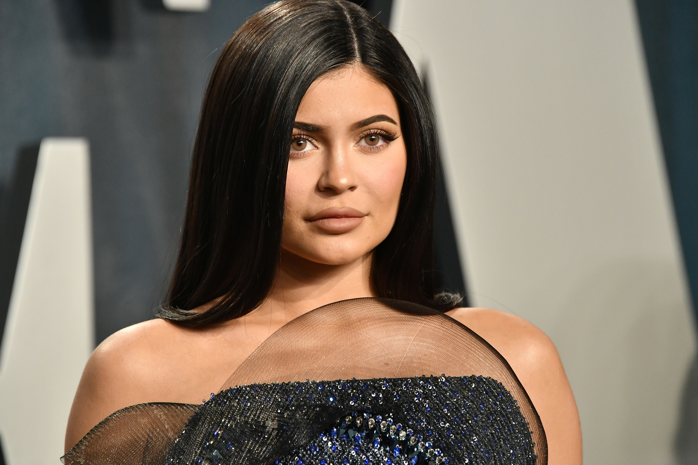

Kylie Jenner Is Being Accused Of Exploiting The Pandemic For Profit By Releasing A Hand Sanitiser And It's Caused A Huge Backlash
How is this any different from all the other companies that are releasing hand sanitisers and making face masks.I’m definitely not a kylie fan but this is just supply and demand!
Posted On: 2021-01-29T00:00:00
Posted By: emilyokeeffe7
I’m not really interested in defending the kardashians but this seems stupid.It’s a business.Bath and Body Works sells hand sanitizer and you’re not breaking down their door.It would be one thing if the had the ONLY company that had available hand sanitizer but that’s not the case,...
Posted On: 2021-01-29T00:00:00
Posted By: jliz0801
Get a grip... Its a product, you don't have to buy it if you don't want it.Where is the outrage when big pharmacy business doing this?
Posted On: 2021-01-29T00:00:00
Posted By: LynQ


Content Date: 2021-01-29
Download Date: 2021-05-30
Document ID: L0C04CQ99